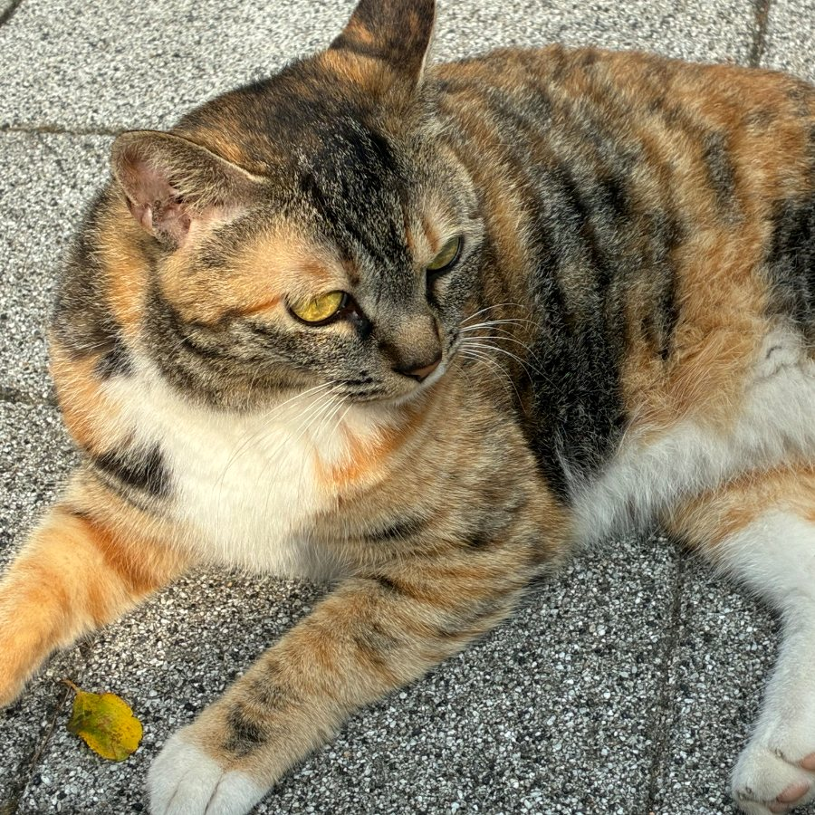

Small moments,Big memories.

작은 스티커로 채우는 나만의 하루
기록하고, 꾸미고, 오래 간직하는 나의 하루.
기록은 이 브라우저에 보관돼요.
아홉 가지 화풍, 모두 무료로
오늘도 예쁜 하루를 모으는 중
개인 기록 공간 · 이 브라우저에 저장
오늘 쓸 것을 골라요
손그림 · 도트 · 레트로 · 먹선 · 젤리 · 금박 · 압화 · 도장 · 펠트
나만 보는 기록 · 이 기기에 저장된 다이어리
프로필은 기본이 비공개. 서로 팔로우하면 친구가 돼요.